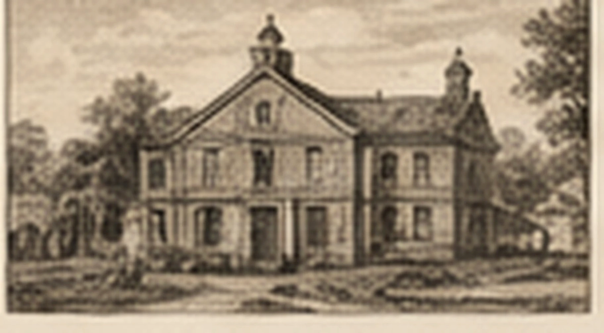
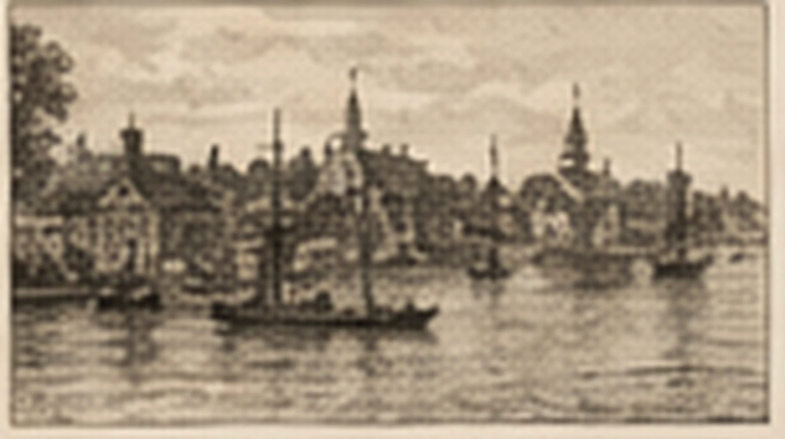

Stewardship
Books should be handled as lasting objects, not disposable content.
Proudly based in Plymouth, Massachusetts
Sentinel House Press is rooted in a coastal town where memory, national story, Wampanoag history, working-waterfront life, and modern community meet.
Tell us about your manuscriptWhy place matters
Plymouth is known as America’s Hometown, a title that carries pride, symbolism, and responsibility.
We are inspired by its working harbor, old streets, archives, public monuments, and the ongoing work of understanding the stories of the Wampanoag and English people who met along these shores.
A publishing house should approach history the same way it approaches a manuscript: with curiosity, evidence, care, context, and the courage to revise an incomplete story.
A local visual vocabulary
Original vintage-style artwork inspired by familiar Plymouth sites. These are interpretive illustrations, not historical documentation.
A symbol, a debate, and a reminder that origin stories are rarely as tidy as the plaque.
A working vessel and floating classroom, restored and maintained with patience, craft, and evidence.

An archive of objects, interpretation, and the complicated business of deciding what a culture preserves.

A working edge between arrival and departure, local life and the wider world.
What Plymouth contributes to the press
Books should be handled as lasting objects, not disposable content.
History changes when more voices, evidence, and context are allowed into the room.
Strong books require patient editorial and production work, much of it invisible.
A book must move from author to reader through a deliberate route, not hopeful drift.
Pride with context
We use the phrase America’s Hometown with affection and awareness. Plymouth’s public story includes Wampanoag homelands, English settlement, civic mythology, immigration, working families, preservation, tourism, and contemporary life.
That complexity is not an inconvenience. It is the reason honest storytelling matters.
Tell us what your manuscript is trying to become.